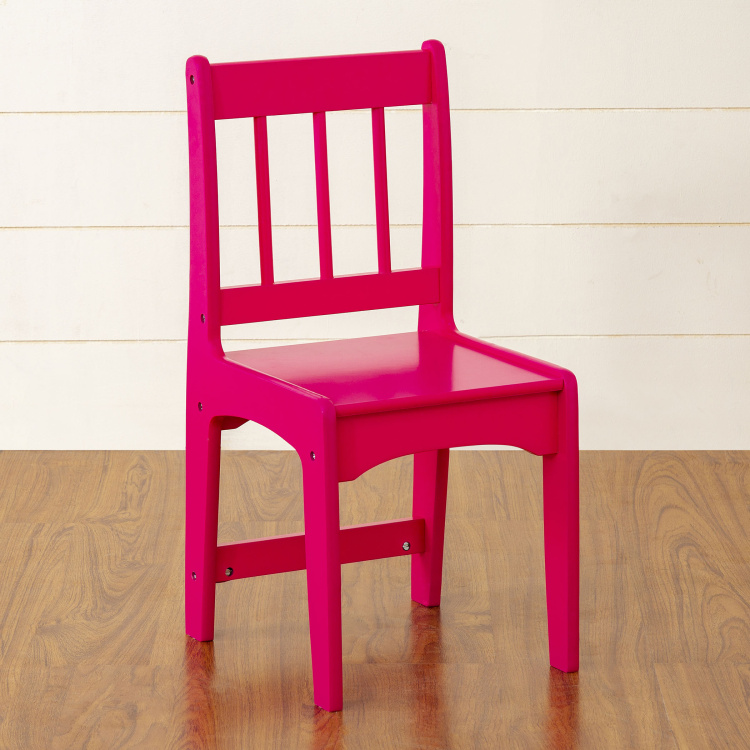
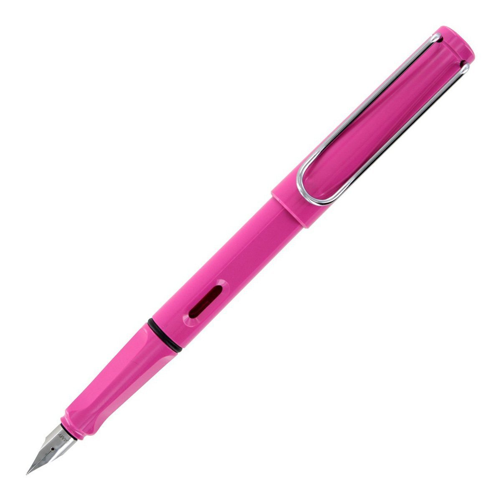
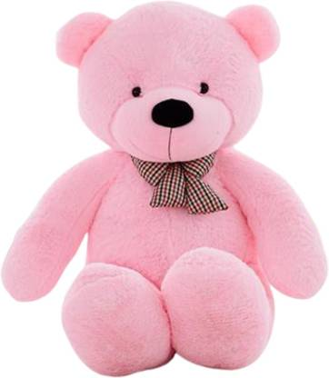

Output On MobileNet Model -
Sunglasses, Darkglasses, Shades
Result -
Google Lens is more Accurate.
Test Image-

Output On Google Lens -
Kids Study Chair
Output On MobileNet Model -
Rocking Chair
Result -
Google Lens is more Accurate.
Test Image-

Output On Google Lens -
Pink Fountain Pen
Output On MobileNet Model -
Ballpoint, Ballpoint Pen, Ballpen, Biro
Result -
Google lens is more Accurate.
Test Image-

Output On Google Lens -
Pink Teddy Bear
Output On MobileNet Model -
Teddy, Teddy Bear
Result -
Google Lens is more Accurate.
I have tested 5 Images.
Google Lens has predicted 4 of them more accurately.
MobileNet has predicted 1 of them accurately.
So according to my Case Study GOOGLE LENS is more accurate.